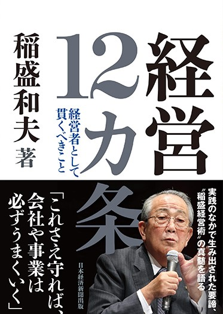
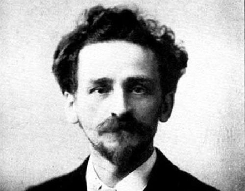

読んだ感想

読んだ感想
「経営12か条」という、いかにもビジネス書という内容とは裏腹に組織を組み立てていくうえで重要なことが数多く記されていました。
その中でも「大義名分」という言葉がカギで、組織を向上していくにはそれ相応の大義名分が必要だということです。自分を突き動かす理由を探し、行動に移していくことが重要なことかもしれません。

「経営12か条」という、いかにもビジネス書という内容とは裏腹に組織を組み立てていくうえで重要なことが数多く記されていました。
その中でも「大義名分」という言葉がカギで、組織を向上していくにはそれ相応の大義名分が必要だということです。自分を突き動かす理由を探し、行動に移していくことが重要なことかもしれません。

自分よりも努力している人は多くいる、そして自分より多くのことを成し遂げる人は自分よりもっと努力しています。
このように、私なりの努力に満足していては周りに追い抜かされ、おいて行かれてしまいます。本書では、フルマラソンを全力疾走で走るべきと書かれていました。
人生というものは有限であり、走ることが出来る間に走ることが大切なのかもしれませんね。

「大きな成功を願うのならば、大きな自己犠牲を、この上なく大きな成功を長鵜なのならば、この上なく大きな自己犠牲を払わなくてはならないのです。」
その通りですよね、先ほども紹介したようにおそらく何かを成し遂げた人はそれ相応の努力があり、信念をもって取り組まなければならない。私もそのこころ構えで何事にも取り組みたいと思います。
素晴らしかったです。素晴らしかったです。素晴らしかった です。
素晴らしかったです。素晴らしかったです。素晴らしかった です。素晴らしかったです。素晴らしかったです。
素晴らしかったです。素晴らしかったです。素晴らしかった です。素晴らしかったです。素晴らしかったです。